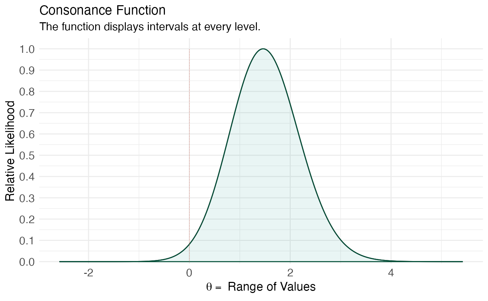

Constructs the likelihood function implied by the exact sampling model
of several common designs, with any nuisance parameters removed by
conditioning or profiling rather than by normal approximation. Returns
the same object structure as curve_lik().
curve_lik_exact(type = c("prop", "or", "rr", "mean", "var", "corr"),
x = NULL, n = NULL, a = NULL, b = NULL, c = NULL, d = NULL,
t1 = NULL, t0 = NULL, data = NULL, steps = 1000, table = TRUE)The design:
"prop"A binomial proportion. Supply x
(successes) and n (trials). The likelihood is exact binomial;
the parameter is the risk \(p\).
"or"A 2x2 table odds ratio. Supply cell counts
a, b, c, d (exposed cases, exposed
non-cases, unexposed cases, unexposed non-cases). The likelihood is
the exact conditional (noncentral hypergeometric) likelihood on the
log-odds-ratio scale; its maximum is the conditional MLE, which
deliberately differs from \(ad/bc\).
"rr"A rate ratio from two Poisson counts. Supply
a (exposed events), t1 (exposed person-time),
b (unexposed events), t0 (unexposed person-time). The
likelihood is the exact conditional binomial likelihood on the
log-rate-ratio scale.
"mean"A normal mean. Supply the data vector
data; the variance is profiled out.
"var"A normal variance. Supply data; the
parameter is \(\sigma^2\).
"corr"A bivariate-normal correlation. Supply
data as a two-column matrix or data frame; the four nuisance
parameters are profiled out numerically.
Successes and trials for type = "prop".
Cell counts for type = "or"; for
type = "rr", a and b are the two event counts.
Person-time denominators for type = "rr".
Data for type = "mean", "var" (numeric
vector), or "corr" (two columns).
Number of grid points. Defaults to 1000.
Indicates whether or not a table output should be generated. The default is TRUE.
A list with 2 items where the dataframe of values is in the
first object, and the table for the values in the second if
table = TRUE.
Royall R. Statistical Evidence: A Likelihood Paradigm. Chapman & Hall/CRC; 1997.
Cox DR, Hinkley DV. Theoretical Statistics. Chapman & Hall; 1974.
# exact conditional odds-ratio likelihood for a 2x2 table
lik <- curve_lik_exact(type = "or", a = 12, b = 8, c = 5, d = 15)
ggcurve(lik[[1]], type = "l1", nullvalue = 0)
